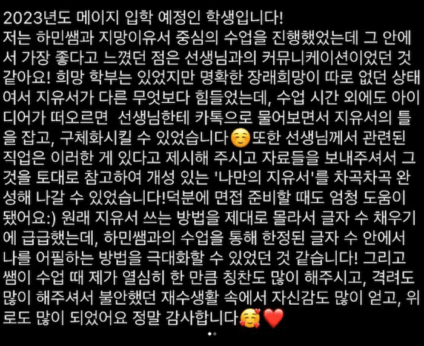

PROGRAM / 본고사·면접
일본 대학 지망이유서·본고사·면접 1:1 준비 | 탄소쥬크
자신의 경험과 지원 동기를 연결하고, 직접 설명할 수 있는 글과 답변을 준비합니다.
이런 학생에게 맞아요
지원하려는 대학과 학부는 정했지만 지망이유서를 어디서 시작할지 막막한 학생을 위한 안내입니다. 관심 분야는 있어도 왜 그 분야를 선택했는지 설명하기 어렵거나, 대학 소개에서 읽은 말을 그대로 옮겨 쓰게 될 수 있습니다. 이럴 때에는 완성된 문장을 먼저 만들기보다 실제로 겪은 일과 그 경험에서 생긴 질문을 정리해 보세요. 지원 동기는 보기 좋은 표현을 찾는 작업보다 자신의 선택을 설명하는 과정에서 구체화할 수 있습니다.
이미 초안을 썼지만 면접에서 질문을 받으면 말이 이어지지 않는 경우에도 글과 답변을 함께 점검할 필요가 있습니다. 자신이 쓴 문장에서 근거를 설명할 수 없는 부분이 있는지, 관심 있는 수업이나 배움의 방향을 직접 확인했는지 살펴보세요. 실제로 하지 않은 활동을 덧붙이거나 읽지 않은 자료를 읽었다고 표현하지 않는 것이 중요합니다. 본인의 경험이 적어 보이더라도 사실을 바꾸는 방식으로 빈칸을 채우지 않습니다.
본고사를 준비하는 학생은 지원 전형에서 요구하는 시험 방식과 준비 범위를 먼저 확인해 주세요. 소논문, 구술이나 다른 과제 중 무엇이 필요한지는 대학 이름만으로 정하지 않습니다. 해당 연도 공식 모집요강과 현재 작성한 답안이 있다면 상담에 준비해 주세요. 자료가 없거나 조건을 확인하지 못한 부분은 [확인 필요]로 남기고, 확인된 요구 사항을 기준으로 준비 순서를 정리합니다.
수업 방식: 1:1 맞춤
탄소쥬크는 학생의 현재 상황에 맞춘 1:1 준비를 안내합니다. 자신의 경험, 관심 분야와 목표를 설명하면서 글과 답변의 방향을 정리합니다. 제공된 후기에는 자료조사, 지망이유서 지도와 모의면접을 경험했다는 내용이 있습니다. 다만 수업에 포함되는 첨삭 횟수, 모의면접 횟수와 수업 외 응대 범위는 [확인 필요]입니다. 후기에 적힌 경험을 모든 학생에게 같은 조건으로 보장하지 않습니다.
지망이유서를 점검할 때에는 문장 표현과 내용의 근거를 나누어 생각해 보세요. 문법이 자연스러운 글이라도 왜 그 대학에서 배우고 싶은지 설명이 부족할 수 있습니다. 반대로 관심의 출발점이 분명한 글이라도 읽는 사람이 이해할 수 있도록 순서를 바꾸는 과정이 필요할 수 있습니다. 첨삭을 받았을 때에는 바뀐 문장을 외우기보다 어떤 이유로 수정했는지 자신의 말로 설명해 보는 편이 좋습니다.
면접 준비에서는 완성된 답변 한 개를 그대로 외우기보다 같은 질문을 다른 표현으로 받아도 이야기할 수 있는지 살펴보세요. 자신의 활동과 관심, 지원 이유가 서로 어긋나지 않는지 확인하고, 모르는 질문에는 아는 것과 모르는 것을 구분하여 답하는 연습을 할 수 있습니다. 본고사 답안도 결론만 적기보다 주장을 뒷받침하는 이유가 실제 문장에 드러나는지 확인해 보세요.
월별 커리큘럼
아래는 상담용 준비 순서 예시입니다. 실제 월별 커리큘럼, 첨삭 횟수와 사용하는 자료는 [확인 필요]입니다. 출원이나 시험이 가까워졌다는 이유만으로 같은 내용을 짧게 끝낼 수 있다고 보장하지 않습니다. 이미 준비한 초안과 실제 지원 조건을 확인한 뒤 필요한 항목을 조정하는 참고안으로 읽어 주세요.
1개월 차 예시: 지원하려는 전형의 자료와 자신의 경험을 모읍니다. 관심 분야가 생긴 계기, 실제로 해 본 활동과 앞으로 배우고 싶은 내용을 구분해 적어 봅니다. 대학 소개에서 가져온 설명과 자신의 경험이 섞여 있다면 각각의 출처를 표시합니다. 아직 확인하지 못한 수업 이름이나 연구 내용은 빈칸으로 남기고, 공식 자료에서 확인할 질문 목록을 만드는 단계로 생각하면 됩니다.
2개월 차 예시: 정리한 재료를 바탕으로 지망이유서 초안을 구성하고 문장 사이의 연결을 살펴봅니다. 관심을 갖게 된 경험이 지원 학부와 어떻게 이어지는지 설명하고, 표현을 다듬은 뒤에도 실제 경험의 의미가 달라지지 않았는지 확인합니다. 본고사 준비가 필요한 학생은 요구되는 형식과 범위를 별도로 정리합니다. 실제 수업에서 다룰 분량과 과제 방식은 상담 후 확인할 내용입니다.
3개월 차 예시: 초안에 적은 내용을 말로 설명해 보고 예상하지 못한 후속 질문에도 근거를 이어 갈 수 있는지 점검합니다. 질문을 듣고 바로 긴 답을 시작하기보다 핵심 결론을 먼저 정리한 뒤 경험을 덧붙이는 연습을 해 보세요. 면접 태도나 답변 속도에 대한 피드백 방식, 최종 점검 일정은 [확인 필요]입니다. 준비 기간이 끝났다는 이유로 합격 가능성을 숫자로 제시하지 않습니다.
이 프로그램과 관련된 실제 후기
 전체 이미지 보기 ↗ (새 창)
전체 이미지 보기 ↗ (새 창)원문
하민쌤 수업듣고 이번에 23학번이 될 학생입니다🍀🍀 하민쌤을 만나기 전에는 정말 어떤식으로 일본어 공부를 해야할지 잘 몰라서 갈팡질팡 했었습니다!! 하지만 선생님을 만나서 N2문법부터 처음부터 다시 잡고 일본어에 조금씩 감을 잡기 시작했습니당!! 저는 청해랑 청독해가 정말 너무 안들려서 힘들었는데 선생님께서 쉐도잉을 숙제로 내주거나 수업시간에 한번씩 시키는데 정말 많은 도움이 되었습니다!! 또한 저는 멘탈이 너무 약해서 정말 유리일 정도 였는데 하민쌤을 만나고 멘탈이 조금씩 강해지고 선생님의 조언과 위로 덕분에 힘든 입시생활 잘 견딜 수 있었던 것 같습니다💕💕감사합니다 쌤!!
그리고 하민쌤의 정말 비장의 무기라고 할 수 있는데요😎 진짜 지유서와 면접 수업은 하민쌤을 따라 갈 수업이 없다고 생각합니다!! 자료조사부터 철저하게 하고 추가로 필요한 부분은 선생님이 기사를 추가적으로 보내주십니다! 이렇게 지유서에서 자료 조사를 열심히 해서 면접 준비도 수월하게 할 수 있었습니다!!! 모의면접도 여러번 선생님이랑 하는데 나올만한 질문과 실제 면접 태도를 실전처럼 해서 면접 때 떨지 않고 잘 할 수 있었습니다!!
( @+지유서 때 열심히 조사한 결과 교수님들이 이런 정보 어디서 알았냐고 칭찬도 받았습니다✌️)정말로 하민쌤과 일본어 + 지유서 + 면접 준비는 정말 완벽 한 것 같습니다!! 정말 선생님 덕분에 원했던 칸세이가쿠인 대학교에 합격 할 수 있었던 것 같습니다!! 🥰🥰🥰
하민쌤 정말감사합니다!! 정말로 제 인생에 최고의 선생님 이십니당🥹❤️

전체 이미지 보기 ↗ (새 창)원문
2023년도 메이지 입학 예정인 학생입니다!
저는 하민쌤과 지망이유서 중심의 수업을 진행했었는데 그 안에서 가장 좋다고 느꼈던 점은 선생님과의 커뮤니케이션이었던 것 같아요! 희망 학부는 있었지만 명확한 장래희망이 따로 없던 상태여서 지유서가 다른 무엇보다 힘들었는데, 수업 시간 외에도 아이디어가 떠오르면 선생님한테 카톡으로 물어보면서 지유서의 틀을 잡고, 구체화시킬 수 있었습니다☺️또한 선생님께서 관련된 직업은 이러한 게 있다고 제시해 주시고 자료들을 보내주셔서 그것을 토대로 참고하여 개성 있는 '나만의 지유서'를 차곡차곡 완성해 나갈 수 있었습니다!덕분에 면접 준비할 때도 엄청 도움이 됐어요:) 원래 지유서 쓰는 방법을 제대로 몰라서 글자 수 채우기에 급급했는데, 하민쌤과의 수업을 통해 한정된 글자 수 안에서 나를 어필하는 방법을 극대화할 수 있었던 것 같습니다! 그리고 쌤이 수업 때 제가 열심히 한 만큼 칭찬도 많이 해주시고, 격려도 많이 해주셔서 불안했던 재수생활 속에서 자신감도 많이 얻고, 위로도 많이 되었어요 정말 감사합니다🥰❤️
후기는 각 수강생의 경험입니다. 개인의 결과와 수업 경험을 동일하게 보장하지 않습니다.
추천 시작 시기
지원 전형의 공식 일정을 확인하고 글쓰기와 말하기에 쓸 수 있는 시간을 함께 살펴보세요. 지망이유서 초안이 있는 학생과 아직 관심 분야를 정리하는 학생은 필요한 준비가 다를 수 있습니다. 상담에는 지금까지 작성한 글, 참고한 공식 자료와 궁금한 점을 준비해 주세요. 초안을 완성하지 못했다는 이유로 상담을 미루기보다 어느 단계에서 막혔는지 설명하는 것부터 시작해도 됩니다.
복수 대학을 준비한다면 학교 이름만 바꿔 같은 글을 제출하는 방식으로 계획하지 마세요. 각 전형의 요구 사항과 자신의 지원 이유를 구분해 정리할 필요가 있습니다. 대학별 제출 분량이나 일정은 이 페이지에서 만들지 않습니다. 자신의 실제 경험을 일관되게 설명하되 지원 목적에 맞게 무엇을 더 확인해야 하는지 질문을 정리하는 과정이 준비의 출발점입니다.
지망이유서 첨삭 전·후: 일반적인 예시
아래 문장은 실제 수강생의 서류나 합격 사례가 아닌 일반적인 예시입니다. 대학, 활동과 배움의 내용은 본인이 확인한 사실로 채워야 합니다. 예시 문장을 그대로 제출하거나 자신이 하지 않은 활동을 경험처럼 바꾸어 쓰지 마세요.
첨삭 전: 저는 일본에서 공부하고 싶습니다. 귀 대학은 좋은 대학이므로 입학하고 싶습니다. 열심히 공부해서 앞으로 사회에 도움이 되는 사람이 되고 싶습니다.
첨삭 후: 저는 [실제로 경험한 활동]에서 [관심을 갖게 된 질문]을 발견했습니다. 이 질문을 더 살펴보기 위해 [지원 학부에서 확인한 배움의 내용]을 공부하고 싶습니다. [공식 자료로 확인한 수업·활동]과 제 관심이 어떻게 연결되는지 설명하고, 입학 후에는 [본인이 세운 학업 계획]을 실천하고자 합니다.
수정의 핵심은 좋은 대학이라는 평가를 늘리는 것이 아니라 경험, 질문과 배움의 연결을 드러내는 것입니다. 대괄호 부분의 실제 내용은 [확인 필요]이며 비워 둡니다. 표현이 자연스러워졌는지와 사실을 정확하게 설명하는지는 별도로 점검해야 합니다.
자주 나오는 질문을 대비하는 연습: 일반적인 예시
다음은 특정 대학의 기출이 아닌 일반적인 면접 연습 질문 10개입니다.
- 왜 일본에서 공부하고 싶나요?
- 왜 이 대학을 선택했나요?
- 왜 이 학부에서 배우고 싶나요?
- 관심 분야를 갖게 된 계기는 무엇인가요?
- 지금까지 어떤 경험을 해 왔나요?
- 입학 후 무엇을 공부하고 싶나요?
- 관심 있는 수업을 어떻게 확인했나요?
- 지망이유서에 적은 경험을 더 설명해 줄 수 있나요?
- 앞으로 어떤 방향으로 배움을 이어가고 싶나요?
- 마지막으로 전하고 싶은 내용이 있나요?
자주 묻는 질문
지망이유서를 대신 작성해 주나요?
지망이유서는 본인의 실제 경험과 생각을 바탕으로 준비하며 하지 않은 활동을 만들어 쓰지 않습니다.
이 페이지의 첨삭 예시도 실제 제출 서류가 아닙니다. 첨삭 범위와 진행 방식은 [확인 필요]이며 본인이 설명할 수 있는 내용으로 준비해야 합니다.
본고사와 면접을 같이 준비해야 하나요?
본고사와 면접의 준비 범위는 지원 전형의 공식 요구 사항을 확인한 뒤 필요한 항목으로 정합니다.
대학이나 학부 이름만으로 시험 방식을 단정하지 않습니다. 공식 자료와 현재 준비한 글이나 답안을 상담에서 공유해 주세요.
면접 질문은 실제 기출인가요?
이 페이지의 질문은 일반적인 연습용 예시이며 특정 대학에서 출제된 기출문제로 안내하지 않습니다.
실제 면접 유형과 질문 범위는 전형별로 확인해야 합니다. 질문을 외우기보다 자신의 경험과 지원 이유를 일관되게 설명하는 연습에 활용해 주세요.
수강료
월 60만 원부터
강사 1:1 · 주 1회, 월 4회 기준
원장 직강 1:1은 월 80만 원부터이며 주 1회, 월 4회, 1회 120분 기준입니다. 강사 수업의 1회 시간은 [확인 필요]입니다.
주 1회는 월 4회, 주 2회는 월 8회, 주 3회는 월 12회 기준입니다. 그룹 수강료는 1인당 금액이며, 이 페이지의 시작 금액은 위에 명시한 1:1 조건을 기준으로 안내합니다.
3개월 이상 등록 시 10%, 6개월 이상 등록 시 15% 할인 안내가 있습니다. 할인 적용의 세부 조건, 교재비와 환불·보강 규정은 [확인 필요]입니다. 전체 금액은 희망 수업 구성과 담당을 확인한 뒤 상담에서 안내합니다.
상담 전에 준비해 주세요
현재 공부한 내용, 목표와 준비 가능한 일정을 알려 주세요. 학생의 최근 학습 자료나 작성한 글이 있다면 함께 준비하고, 수업을 희망하는 요일과 복습 가능한 시간도 정리해 주세요. 확인되지 않은 목표 점수나 대학 합격을 약속하지 않고 상담에서 필요한 준비를 구체화합니다.
수업 장소는 서울 강남구 도산대로17길 37-1 201호입니다. 신사역 8번 출구에서 도보 10분이며 발렛 주차가 가능합니다. 상담 신청 후 구체적인 수업 가능 시간과 준비 범위를 확인해 주세요.
CONSULTATION
나의 입시, 상담부터 시작하세요.
목표 학교와 현재 수준, 준비 일정을 함께 정리해 보세요.
최종 수정일: 2026.10.16